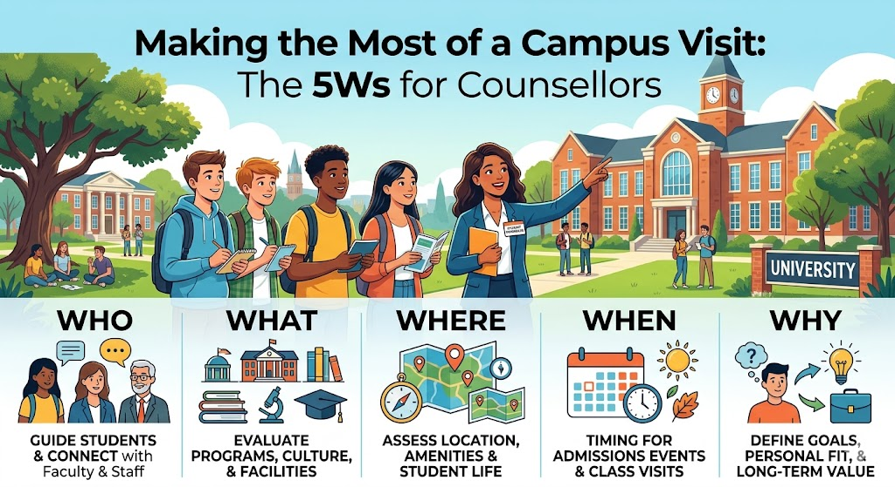

Making the Most of a Campus Visit: The 5Ws for Counsellors

"Webinar Wednesday: Making the Most of a Campus Visit" — IACAC (pre-recorded online webinar) | Participants: Mathew Akitani (International School of Brussels), Carolyn Barr (Leiden University), June Jetabut (Oslo International School), Molly Witt (University of Vermont)
Campus visits are among the most valuable — and underutilised — tools in a school counsellor's professional development toolkit. Whether you are visiting on your own or accompanying students, the quality of what you bring back depends almost entirely on how intentionally you prepared before you arrived, how carefully you observed while you were there, and what you did with those observations when you returned.
This post summarises the 5W framework shared in an IACAC webinar on campus visits — combining perspectives from both school counsellors and university representatives to give a full picture of how to make each visit count.
Why We Love Campus Visits
Before the framework, the webinar opened with an honest and energising answer to a simple question: why do counsellors love campus visits in the first place?
- They challenge preconceived notions. A university that looked mediocre on a ranking table may feel electric on the ground. One that looked prestigious may feel stifling. Nothing replaces the experience of actually being there.
- They improve your ability to guide students. Having walked the campus yourself means your 1:1 conversations become richer, more specific, and more credible. You are not describing what a brochure says — you are describing what you saw and felt.
- Universities use them to understand your school's students. From the university side, hosting counsellors is a relationship investment. They want to understand the context your students come from and how to better support your applications.
- Immersive activities build real insight. The best visits go beyond presentations and tours. When you participate in sample lectures, workshops, or student-led sessions, you carry back something no data point can replicate.
The 5Ws Framework
1. Work Ahead — Prepare Deliberately
The quality of a campus visit is largely determined before you arrive. The webinar was clear: underprepared counsellors get surface-level visits. Prepared counsellors get depth.
Read the institution's facts, programmes, and current news. Learn the names of your hosts and the general organisational structure. Identify students from your school already enrolled — they are invaluable on-ground sources. Prepare separate question checklists for admission officers and for students. Co-develop the itinerary with alumni or current students if possible.
Consider the logistics of the experience too — especially if you are bringing students. Who handles email communication before the visit? Who is responsible for shared documentation, social media, questionnaires, cheatsheets, and on-site navigation guidance? Agreeing these responsibilities in advance prevents confusion on the day.
One additional ask worth making before you visit: request experiential sessions, not just show-and-tell presentations. Campus visits should not be passive. Ask for sample lectures, lab walkthroughs, student-led tours, or workshops. Universities are usually happy to accommodate these requests when asked in advance.
2. Watch Carefully — Observe the Real Campus Life
The most important things to notice on a campus are often not the things in the official programme. They are the things happening around you when no one is presenting.
- Observe students in their natural habitat. How are they moving through campus? Are they engaged, social, and energised — or isolated and distracted? The student culture you observe on a Tuesday afternoon is more honest than the student panel in the auditorium.
- Assess safety and navigation. What are the campus working hours? How easy is it for a student from overseas to navigate independently? What does after-dark look like?
- Notice events and noticeboards. What is happening on campus this week? The posters, club boards, and notice displays tell you what students actually care about at this institution.
- Give immediate feedback. The webinar specifically noted that universities value timely counsellor feedback on their sessions. Do not wait until your reflection report — share impressions with your host before you leave.
Universities often wish that visiting counsellors would practise a digital detox during sessions. Being fully present — not checking phones or laptops — allows you to absorb the experience fully and models the kind of engagement you expect from your own students.
3. Write It Down — Capture While It Is Fresh
Memory fades faster than we expect — especially when you are visiting multiple institutions in a short trip. Structured note-taking during and immediately after each visit dramatically increases the quality of what you carry back.
- Reflect separately, then compare notes with colleagues if you visited together.
- Share notes with other participants who may have attended different sessions simultaneously.
- Build and maintain connections — not just with admission officers, but with any student or alumni contact you met. These relationships compound over years.
- Consider setting up a shared Google Document or Padlet with your counselling team for ongoing reflection and learning consolidation.
- WhatsApp groups can be surprisingly effective for capturing real-time insights during a multi-day visit and for continuing the conversation afterwards.
- Send your reflections to the university — they are genuinely interested in counsellor feedback, and sharing it builds the relationship.
4. Work It — Convert Learning into Action
A campus visit is only as valuable as what you do with it. The webinar's clearest message on this point: bring it back, share it widely, and make it visible.
| Audience | How to Share |
|---|---|
| Students | Classroom presentations, 1:1 counselling sessions, visual materials and videos from the visit |
| Parents | Parent information evenings, newsletters, sharing real impressions beyond what the brochure says |
| Colleagues | Staff briefings, shared documentation, passing on materials received from university hosts |
| Universities | Thank-you and follow-up emails, sharing your school's student profiles, requesting materials for future guidance |
Students respond especially well to hearing the real journey of current university students — not the polished version on the university website, but the honest account of adjustment, social life, academic pressure, and growth. If you met students on your visit, share their stories (with permission) in your sessions.
Finally, make a habit of subscribing to university newsletters and updates. The relationship with a university should not begin and end with the visit — it should continue and deepen through ongoing communication.
Conclusion
The 5W framework — Why we love campus visits, Work ahead, Watch carefully, Write it down, and Work it — is a simple but powerful structure for turning a campus visit from a pleasant trip into a professional development investment that genuinely benefits your students.
The counsellors and university representatives on the webinar spoke from real experience, and the consistent thread across all their advice was this: intentionality at every stage is what separates a transformative campus visit from a forgettable one.
"You are not just visiting a campus. You are building the knowledge and relationships that will help your students make better decisions for the rest of their lives."
Reference: "Webinar Wednesday: Making the Most of a Campus Visit" | IACAC (International Association for College Admission Counseling)